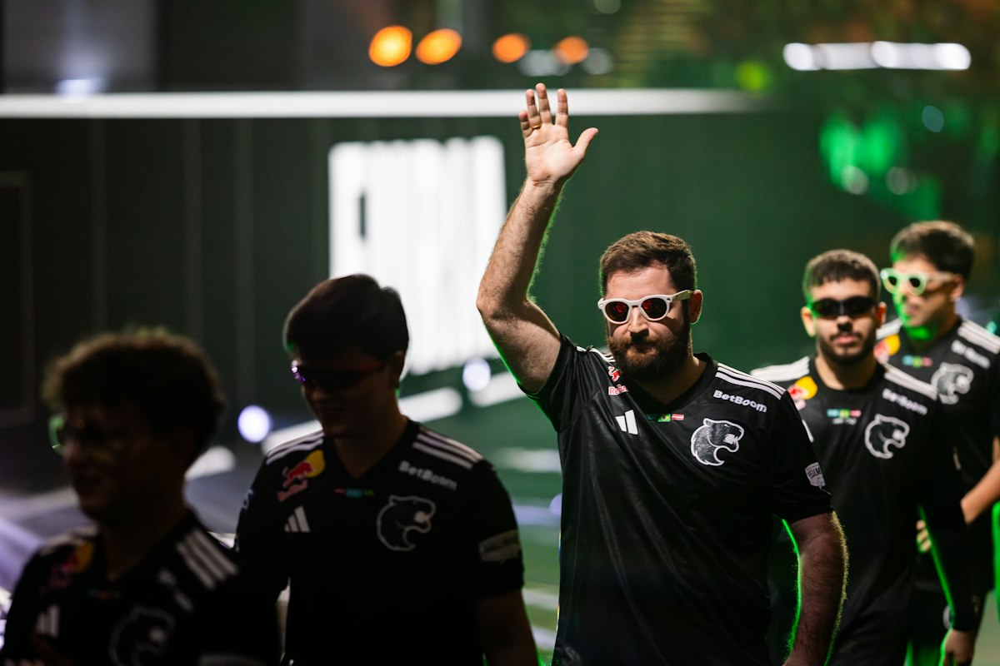

Counter-Strike 2

O FPS da Valve continua sendo o carro-chefe da audiência no Brasil, impulsionado por organizações como FURIA, MIBR e paiN Gaming.
Atualizado em .

O FPS da Valve continua sendo o carro-chefe da audiência no Brasil, impulsionado por organizações como FURIA, MIBR e paiN Gaming.
Atualizado em .

Com uma das torcidas mais barulhentas do mundo, o competitivo de LoL movimenta milhões de espectadores e exige coordenação tática constante entre os cinco jogadores.
Atualizado em .

Desde o título mundial da LOUD em 2022 e 2026, o Brasil se manteve entre as principais forças das Américas, revelando novos talentos a cada temporada.
Atualizado em .